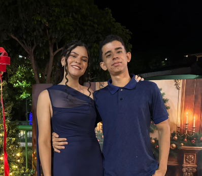
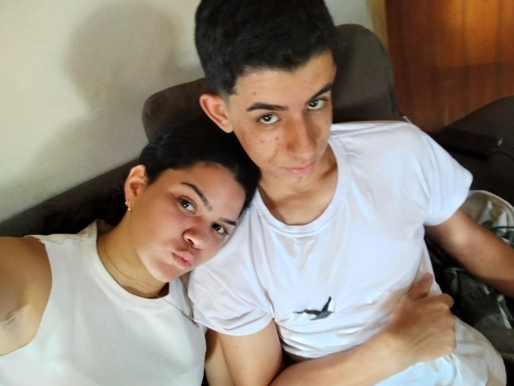
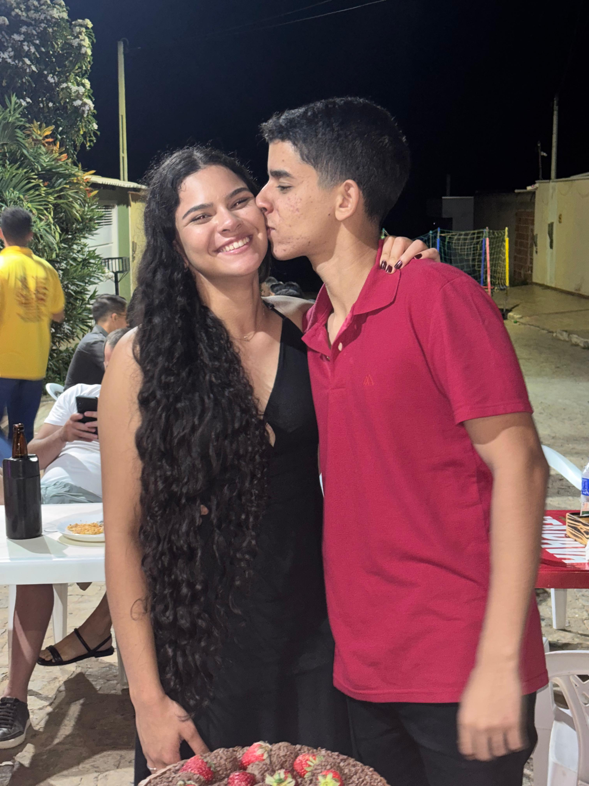
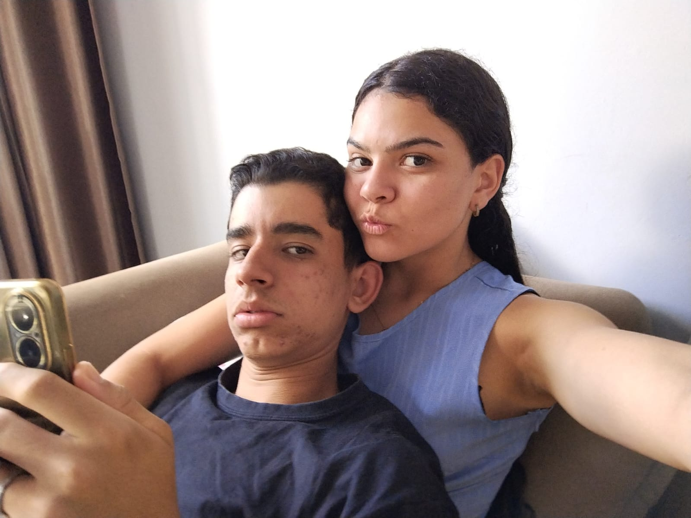
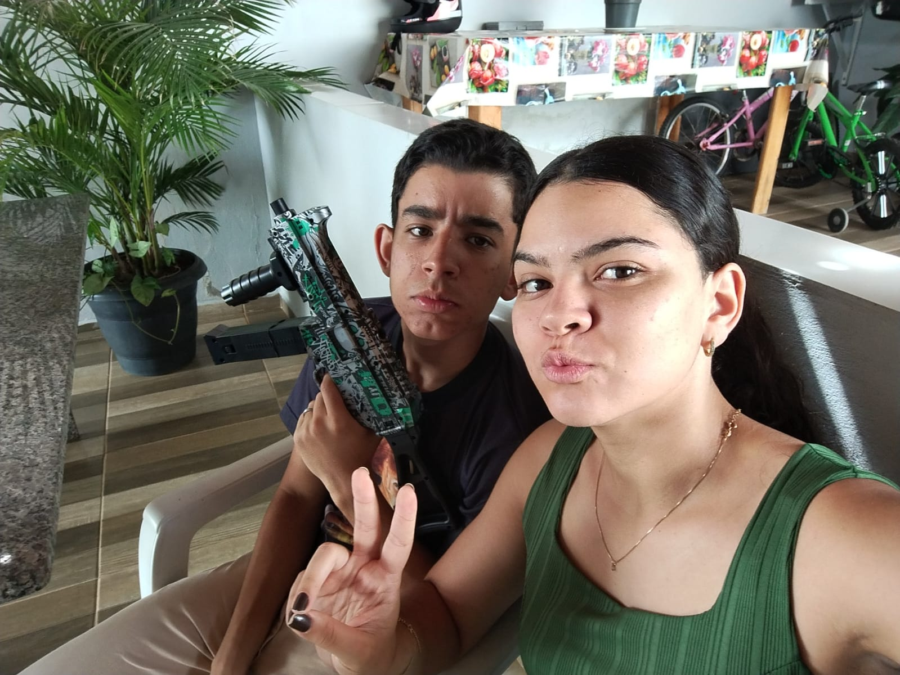
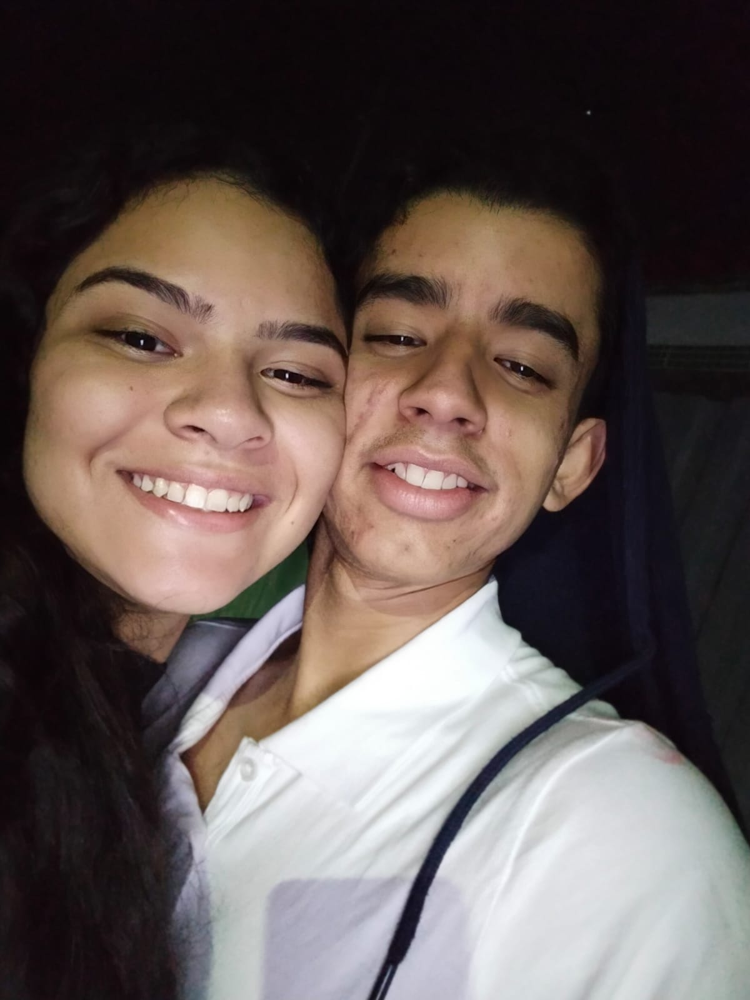
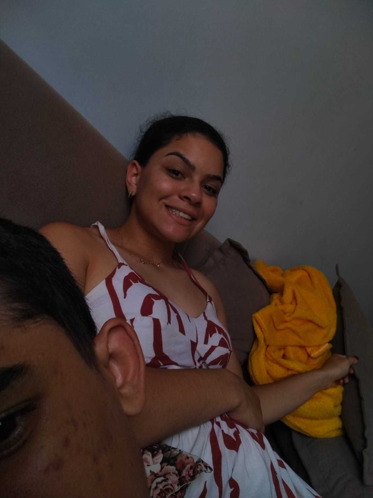
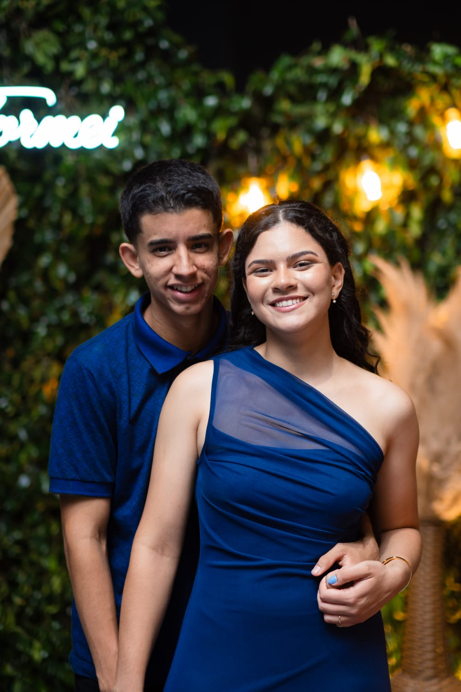

Cada momento ao seu lado transformou minha vida e agora não me imagino sem ti.
ver galeria





Dê play na música para ler 💙
O que sinto por você é como uma sinfonia suave, como o som de um violino em um dia de chuva — algo que toca fundo e não se apaga. Amo você de tal forma que não consigo imaginar minha existência sem a sua presença. Reconheço que és um ser único, daqueles que não surgem duas vezes: em um mundo onde tudo parece passageiro e compartilhado, foi você quem chegou e despertou a parte mais profunda da minha alma, como se tivesse lhe dado uma nova voz. Ninguém antes me mostrou o quanto é bom ser amado, nem o quanto é maravilhoso poder amar alguém de verdade. Você sempre esteve ao meu lado, apoiando até mesmo as minhas ideias mais ousadas, e nunca deixou de acreditar no futuro que podemos construir juntos. Percebo cada esforço seu, cada pequeno gesto que faz com carinho. Quando me olha com esses olhos castanhos, vejo uma verdadeira obra de arte — daquelas que nos fazem desejar ficar ali para sempre, como o sentimento de um fim de tarde: há alegria por estar vivendo aquele momento, mas também um receio suave de que ele possa acabar. Mesmo assim, tenho certeza de que isso não acontecerá, pois se o brilho do sol dependesse do meu amor para continuar, ele jamais se poria — amo você muito além do que as palavras podem explicar. Admiro os seus cabelos cacheados e as suas bochechas macias. Sei que às vezes você duvida de si mesma: acha que não está bem, que come pouco, que os seus sonhos são grandes demais ou que não se esforça o suficiente. Mas saiba que, de dentro de nós, nem sempre conseguimos ver o nosso próprio valor. Eu te enxergo como uma mulher incrível, forte, inteligente e determinada — e é por causa de você que também me motivei a correr atrás dos meus sonhos. Agora, os meus desejos incluem ver você conquistar os seus: viajar, viver em paz, envelhecer juntos, ver filhos correndo por perto, guardar memórias em um álbum de viagens e, acima de tudo, poder sempre contemplar o seu sorriso. Desejo do fundo do coração nunca fazer rolar dos seus olhos uma lágrima de tristeza ou dor — apenas aquelas que surgem de tanto rir. Quero te ver feliz e farei o possível para que não desista de nada. Na sua caminhada, serei como um companheiro de estrada: não posso garantir que os sonhos se realizarão de imediato, mas estarei sempre ao seu lado, ajudando-a a chegar onde deseja. Não fique triste por eu não escrever isto em um papel, pois palavras soltas, sem uma melodia que as envolva, não conseguem transmitir nem um pouco do tamanho do amor que sinto por ti — assim como na história da Bela e da Fera. Guarde todos os livros que te dou com carinho, e não os compartilhe com ninguém: pouco a pouco, a sua Fera irá construir a sua biblioteca inteira, só para você, minha Bela. Isso é apenas uma parte do que sinto, pois palavras não bastam para medir esse amor. Escrevo isso nesta madrugada, por volta da meia-noite e doze, quando você já dormia, enquanto eu permanecia acordado pensando em você e em tudo o que ainda vamos viver. Escutava uma melodia suave, e senti que nem a música mais bela consegue expressar o que trago no peito. Esse sentimento é exclusivo seu, e sempre será. Não há espaço para mais ninguém: aprendi que não se troca um diamante raro por moedas comuns, pois nenhuma delas tem o brilho, a beleza e o valor que você tem para mim. Com todo o meu amor, Seu Pocoyo 💙
Ele ilumina até os meus dias mais difíceis.
Me faz sentir amado todos os dias.
Qualquer momento é especial ao seu lado.
É único e impossível de não amar.
Cheio de bondade, amor e luz.
Porque você é simplesmente perfeita para mim.

Obrigado por fazer parte da minha vida. Você é minha melhor escolha todos os dias. Hoje, amanhã e para sempre minha dona coelha. 💙